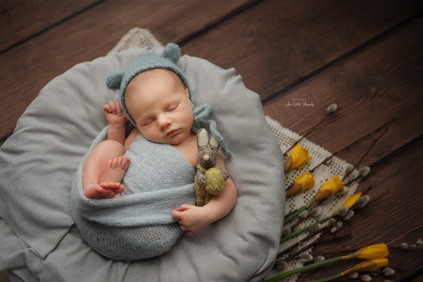

NEUGEBORENENFOTOGRAFIE
Saisonale Aufnahmen – die Magie des Moments
Warum saisonale Elemente euren Bildern eine besondere emotionale Tiefe verleihen.

Wenn wir ein Fotoshooting für unser Baby oder unser Kind planen, denken wir oft an klassische und zeitlose Aufnahmen. Doch lohnt es sich, saisonale Elemente wie Frühlingsblumen, österliche Akzente oder Herbstblätter einzubauen
Die Antwort ist ganz klar: Ja.
Jede Jahreszeit hat ihre eigene, besondere Atmosphäre
Der Frühling steht für zarte Pastelltöne, blühende Blumen und frisches Grün. Der Sommer bringt lebendige Farben, Sonnenlicht und spielerische Leichtigkeit.
Der Herbst verzaubert mit warmen Erdtönen und raschelndem Laub, während der Winter eine ruhige Kulisse aus Kerzenlicht, kuscheligen Decken und winterlicher Stimmung bietet.
Saisonale Bilder fangen genau dieses Gefühl ein und verleihen den Fotos eine besondere emotionale Tiefe.
Sie erzählen eine Geschichte über den Moment, in dem sie entstanden sind – über das erste Ostern, einen goldenen Herbst oder das erste Weihnachtsfest als Familie.
Saisonale und zeitlose Aufnahmen – die perfekte Kombination
Natürlich sollen die Bilder auch langfristig wunderschön aussehen. Deshalb kombiniere ich saisonale Motive immer mit klassischen, neutralen Aufnahmen, die unabhängig von der Jahreszeit zeitlos wirken.
So entstehen Bilder, die sowohl emotional als auch ästhetisch dauerhaft Bestand haben.
Warum sollten Eltern sich für saisonale Aufnahmen entscheiden
- Emotionale Tiefe: Die Bilder wecken auch Jahre später Erinnerungen an diese besondere Zeit.
- Einzigartige Gestaltung: Blumen, Blätter oder Lichter machen jedes Shooting individuell.
- Ideal für Karten & Geschenke: Perfekt für Ostergrüße, Weihnachtskarten oder persönliche Fotogeschenke.
Fazit
Saisonale Aufnahmen sind eine wundervolle Ergänzung zu klassischen Bildern. Sie verleihen der Fotosession eine besondere Note und verbinden Erinnerungen mit der Stimmung einer ganz bestimmten Jahreszeit.
Wenn du eine Fotosession planst, lass uns gemeinsam überlegen, welche saisonalen Elemente dein Shooting bereichern können.
Möchtet ihr euer eigenes Neugeborenen-Shooting buchen
Gemeinsam gestalten wir Erinnerungen, die nicht nur zeitlos sind, sondern auch die Magie einer ganz besonderen Jahreszeit bewahren.